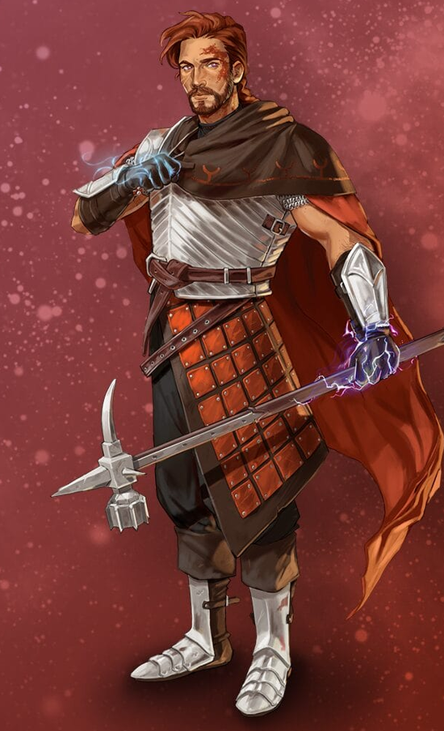
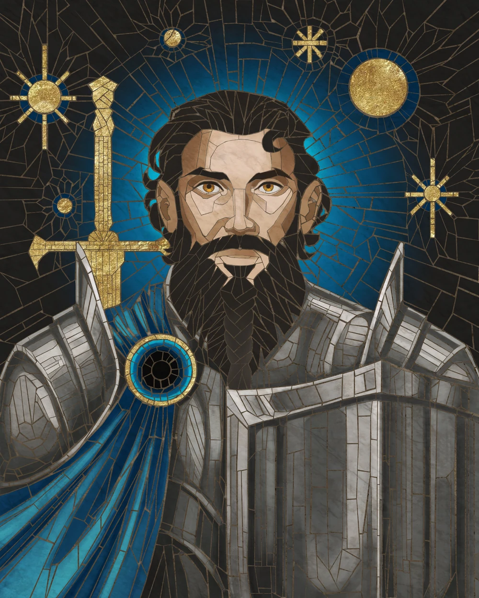
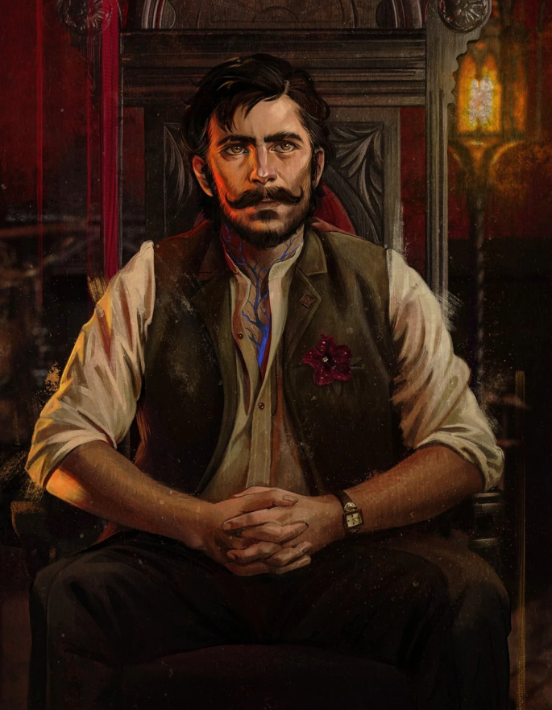

Azune Nayar
Ancien vétéran de la Rébellion du Fauconnier, Azune est un Arcane Marshal de la Garde Révolutionnaire qui veille sur les lois magiques de Dol-Makjar avec discipline et compassion. Entre son devoir envers le Conseil Révolutionnaire, les intrigues des Maisons Brisées et les secrets de son héritage draconique, il lutte pour incarner la justice dans un monde en pleine reconstruction.
Race : Humain
Classe : Paladin / Ensorceleur


Zerxus Ilerez
Premier Chevalier d'Avalir et membre influent de l'Anneau de Laiton, Zerxus est un protecteur idéaliste prêt à tout pour sauver ceux qu'il aime, même face aux forces des Enfers. Rongé par le deuil mais animé par une foi inébranlable en la rédemption, son refus d'abandonner les âmes perdues le conduit au cœur de la chute tragique de la cité volante.
Race : Humain
Classe : Paladin
Marion Collodi
Enquêteur érudit au service de l'organisation secrète Candela Obscura, Marion explore les phénomènes surnaturels qui menacent la cité de la Nouvelle-Faro. Armé de son savoir occulte et d'une grande finesse d'esprit, il affronte les horreurs venues d'au-delà du Voile au péril de sa propre santé mentale.
Rôle : Érudit
Classe : Occultiste
